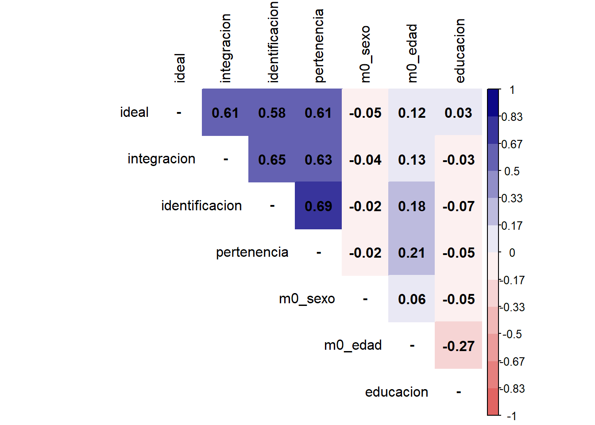

pacman::p_load(tidyverse, # Manipulacion datos
sjPlot, # Graficos y tablas
sjmisc, # Descriptivos
corrplot, # Correlaciones
psych, # Test estadísticos
kableExtra, # Tablas
rempsyc,
broom,
sjstats,
gginference)
options(scipen = 999) # para desactivar notacion cientifica
rm(list = ls()) # para limpiar el entorno de trabajoPráctico resumen: Asociación categóricas, matrices de correlación y chi-cuadrado
Sesión del lunes, 20 de octubre de 2025
Objetivo de la práctica
El objetivo de esta guía práctica es repasar los últimos dos prácticos del curso (4 y 5)
En detalle, aprenderemos a:
- Estimar e interpretar coeficientes de correlación de Spearman y Kendall
- Generar y reportar matrices de correlación
- Aplicar coeficientes de correlación entre variables categóricas (nominales-ordinales)
- Estimar e interpretar la prueba de Chi-cuadrado (\(X^2\))
En esta guía utilizaremos un ejemplo que desarrollaremos progresivamente para exponer los contenidos. Al final de esta guía se proporciona un ejercicio autónomo que deberá resolver de manera individual o grupal tomando como referencia el ejemplo aquí expuesto.
2. Datos y librerías
Comencemos por preparar nuestros datos. Iniciamos cargando las librerías necesarias.
Cargamos los datos directamente desde internet.
# Cargar bbdd desde internet
load(url("https://github.com/Kevin-carrasco/R-data-analisis/raw/main/practicos/files/elsoc2016_proc.RData"))
proc_data <- proc_data %>%
mutate(educacion=car::recode(m01, "c(1,2,3,4,5)=1; c(6,7,8,9,10)=2")) %>%
select(-cohesion_barrial, -m01)A continuación, exploramos el subset de datos proc_data.
names(proc_data) # Nombre de columnas[1] "ideal" "integracion" "identificacion" "pertenencia"
[5] "m0_sexo" "m0_edad" "educacion" dim(proc_data) # Dimensiones[1] 2927 7Contamos con 7 variables (columnas) y 2927 observaciones (filas).
Ahora, exploremos estadísticos descriptivos de nuestra base procesada proc_data
proc_data %>%
sjmisc::descr(show = c("label","range", "mean", "sd", "NA.prc", "n")) %>%
kable(.,"markdown")| var | label | n | NA.prc | mean | sd | range | |
|---|---|---|---|---|---|---|---|
| 2 | ideal | Este barrio es ideal para mi | 2926 | 0.0341647 | 2.615174 | 1.0202541 | 4 (0-4) |
| 4 | integracion | Me siento integrado en este barrio | 2923 | 0.1366587 | 2.565515 | 0.9993502 | 4 (0-4) |
| 3 | identificacion | Me identifico con la gente de este barrio | 2923 | 0.1366587 | 2.523777 | 0.9884856 | 4 (0-4) |
| 7 | pertenencia | Me siento parte de este barrio | 2925 | 0.0683293 | 2.627692 | 0.9878809 | 4 (0-4) |
| 6 | m0_sexo | Sexo del entrevistado | 2927 | 0.0000000 | 1.602665 | 0.4894300 | 1 (1-2) |
| 5 | m0_edad | Edad del entrevistado | 2927 | 0.0000000 | 46.090878 | 15.2867983 | 70 (18-88) |
| 1 | educacion | educacion | 2925 | 0.0683293 | 1.348034 | 0.4764284 | 1 (1-2) |
3. Análisis
3.1 Correlación para variables ordinales
3.1.1 Coeficiente de correlación de Spearman
En R calcularlo es sencillo, pero debemos tener en cuenta que las variables que relacionemos tengan un orden de rango similar: por ejemplo, que el valor más bajo sea el rango más bajo y que el valor más alto sea el rango más alto.
Observemos las frecuencias de las variables ideal (Estebarrio es ideal para mi) e integracion (Me siento integrado en este barrio)
sjmisc::frq(proc_data$ideal)Este barrio es ideal para mi (x) <numeric>
# total N=2927 valid N=2926 mean=2.62 sd=1.02
Value | Label | N | Raw % | Valid % | Cum. %
------------------------------------------------------------------------
0 | Totalmente en desacuerdo | 114 | 3.89 | 3.90 | 3.90
1 | En desacuerdo | 413 | 14.11 | 14.11 | 18.01
2 | Ni de acuerdo ni en desacuerdo | 379 | 12.95 | 12.95 | 30.96
3 | De acuerdo | 1599 | 54.63 | 54.65 | 85.61
4 | Totalmente de acuerdo | 421 | 14.38 | 14.39 | 100.00
<NA> | <NA> | 1 | 0.03 | <NA> | <NA>sjmisc::frq(proc_data$integracion)Me siento integrado en este barrio (x) <numeric>
# total N=2927 valid N=2923 mean=2.57 sd=1.00
Value | Label | N | Raw % | Valid % | Cum. %
------------------------------------------------------------------------
0 | Totalmente en desacuerdo | 109 | 3.72 | 3.73 | 3.73
1 | En desacuerdo | 436 | 14.90 | 14.92 | 18.65
2 | Ni de acuerdo ni en desacuerdo | 408 | 13.94 | 13.96 | 32.60
3 | De acuerdo | 1633 | 55.79 | 55.87 | 88.47
4 | Totalmente de acuerdo | 337 | 11.51 | 11.53 | 100.00
<NA> | <NA> | 4 | 0.14 | <NA> | <NA>Ahora, calculemos el coeficiente de correlación de Spearman con cor.test.
cor.test(proc_data$ideal, proc_data$integracion, method = "spearman") #especificamos metodo spearman
Spearman's rank correlation rho
data: proc_data$ideal and proc_data$integracion
S = 1652768221, p-value < 0.00000000000000022
alternative hypothesis: true rho is not equal to 0
sample estimates:
rho
0.6025133 Ahora conocemos el valor del coeficiente de Spearman mediante al argumento rho, que es igual a 0.6, siendo positivo y gramde según los criterios de Cohen (1988).
3.1.2 Coeficiente de correlación Tau de Kendall
Recomendado cuando hay un set de datos pequeños y/o cuando hay mucha repetición de observaciones en el mismo ranking. Se basa en una comparación de pares de observaciones concordantes y discordantes.
Ahora, calculemos el coeficiente de correlación Tau de Kendall con cor.test.
cor.test(proc_data$ideal, proc_data$integracion, method = "kendall") #especificamos metodo kendall
Kendall's rank correlation tau
data: proc_data$ideal and proc_data$integracion
z = 34.923, p-value < 0.00000000000000022
alternative hypothesis: true tau is not equal to 0
sample estimates:
tau
0.5569015 El valor del coeficiente de Kendall mediante al argumento tau, es igual a 0.56, siendo positivo y grande según los criterios de Cohen (1988).
3.3 Matrices de correlación
En su forma simple en R se aplica la función cor a la base de datos, y la guardamos en un objeto que le damos el nombre M para futuras operaciones:
M <- cor(proc_data, use = "complete.obs")
M ideal integracion identificacion pertenencia m0_sexo
ideal 1.00000000 0.60986590 0.58426016 0.61435602 -0.05131174
integracion 0.60986590 1.00000000 0.65241440 0.63128010 -0.03532181
identificacion 0.58426016 0.65241440 1.00000000 0.68974639 -0.01999725
pertenencia 0.61435602 0.63128010 0.68974639 1.00000000 -0.02160000
m0_sexo -0.05131174 -0.03532181 -0.01999725 -0.02160000 1.00000000
m0_edad 0.12402201 0.12674576 0.17855004 0.20642161 0.06180434
educacion 0.02719214 -0.03236403 -0.07009810 -0.05085423 -0.04709029
m0_edad educacion
ideal 0.12402201 0.02719214
integracion 0.12674576 -0.03236403
identificacion 0.17855004 -0.07009810
pertenencia 0.20642161 -0.05085423
m0_sexo 0.06180434 -0.04709029
m0_edad 1.00000000 -0.27056315
educacion -0.27056315 1.00000000Este es el reporte simple, pero no muy amigable a la vista. Para una versión más reportable, utilizamos la función tab_corr.
sjPlot::tab_corr(proc_data,
triangle = "lower")| Este barrio es ideal para mi | Me siento integrado en este barrio | Me identifico con la gente de este barrio |
Me siento parte de este barrio | Sexo del entrevistado | Edad del entrevistado | educacion | |
| Este barrio es ideal para mi | |||||||
| Me siento integrado en este barrio | 0.610*** | ||||||
| Me identifico con la gente de este barrio |
0.584*** | 0.652*** | |||||
| Me siento parte de este barrio | 0.614*** | 0.631*** | 0.690*** | ||||
| Sexo del entrevistado | -0.051** | -0.035 | -0.020 | -0.022 | |||
| Edad del entrevistado | 0.124*** | 0.127*** | 0.179*** | 0.206*** | 0.062*** | ||
| educacion | 0.027 | -0.032 | -0.070*** | -0.051** | -0.047* | -0.271*** | |
| Computed correlation used pearson-method with listwise-deletion. | |||||||
La distinción entre listwise y pairwise es relevante al momento de estimar matrices de correlación, donde esta decisión debe estar claramente explicitada y fundamentada. En el ejemplo de tabla anterior usamos listwise que es el argumento por defecto (y nos lo indica al final de la tabla).
Veamos cómo hacerlo con pairwise:
sjPlot::tab_corr(proc_data,
na.deletion = "pairwise", # espeficicamos tratamiento NA
triangle = "lower")| Este barrio es ideal para mi | Me siento integrado en este barrio | Me identifico con la gente de este barrio |
Me siento parte de este barrio | Sexo del entrevistado | Edad del entrevistado | educacion | |
| Este barrio es ideal para mi | |||||||
| Me siento integrado en este barrio | 0.610*** | ||||||
| Me identifico con la gente de este barrio |
0.584*** | 0.653*** | |||||
| Me siento parte de este barrio | 0.614*** | 0.632*** | 0.690*** | ||||
| Sexo del entrevistado | -0.052** | -0.036 | -0.021 | -0.022 | |||
| Edad del entrevistado | 0.124*** | 0.126*** | 0.178*** | 0.206*** | 0.062*** | ||
| educacion | 0.028 | -0.032 | -0.069*** | -0.051** | -0.047* | -0.272*** | |
| Computed correlation used pearson-method with pairwise-deletion. | |||||||
Otra manera de presentar matrices de correlación es mediante gráficos. Veamos un ejemplo con la función corrplot de la librería corrplot sobre nuestra matriz M ya creada.
diag(M) <- NA
corrplot::corrplot(M,
method = "color",
addCoef.col = "black",
type = "upper",
tl.col = "black",
col = colorRampPalette(c("#E16462", "white", "#0D0887"))(12),
bg = "white",
na.label = "-") 
3.4 Baterías e índices
En la literatura sobre cohesión barrial se suele utilizar un índice sumativo o promedio entre los distintos indicadores sobre cohesión barrial: ideal,integracion,identificacion,pertenencia.
M_cohesion <- proc_data %>%
dplyr::select(ideal, integracion, identificacion, pertenencia)
sjPlot::tab_corr(M_cohesion,
na.deletion = "listwise", # espeficicamos tratamiento NA
triangle = "lower")| Este barrio es ideal para mi | Me siento integrado en este barrio | Me identifico con la gente de este barrio |
Me siento parte de este barrio | |
| Este barrio es ideal para mi | ||||
| Me siento integrado en este barrio | 0.610*** | |||
| Me identifico con la gente de este barrio |
0.584*** | 0.653*** | ||
| Me siento parte de este barrio | 0.614*** | 0.632*** | 0.690*** | |
| Computed correlation used pearson-method with listwise-deletion. | ||||
Los ítems se correlacionan de manera positiva y con tamaños de efecto moderados y altos para las ciencias sociales. Con ello, podemos pasar a evaluar sus relaciones tienen consistencia interna.
alpha_psci <- psych::alpha(M_cohesion)
alpha_psci$total$raw_alpha[1] 0.8720242De acuerdo con este resultado, el alpha de Cronbach reflejado en el raw_alpha del output es superior al estandar de 0.6 en ciencias sociales, por lo que se sostiene su consistencia.
Ahora, generemos el índice cohesion
proc_data <- cbind(proc_data, "cohesion" = rowMeans(proc_data %>% select(ideal, integracion, identificacion, pertenencia), na.rm=TRUE))
proc_data <- proc_data %>%
mutate(
cohesion_dic = case_when(
cohesion >= mean(cohesion, na.rm = TRUE) ~ 1,
cohesion < mean(cohesion, na.rm = TRUE) ~ 0,
TRUE ~ NA_real_
)
)
proc_data %>% select(cohesion, cohesion_dic) %>%
sjmisc::descr(, show = c("range", "mean", "sd", "NA.prc", "n")) %>%
kable(.,"markdown")| var | n | NA.prc | mean | sd | range |
|---|---|---|---|---|---|
| cohesion | 2927 | 0 | 2.5829917 | 0.8491213 | 4 (0-4) |
| cohesion_dic | 2927 | 0 | 0.6026648 | 0.4894300 | 1 (0-1) |
3.5 Correlación punto biserial
La correlación punto biserial se utiliza para calcular la correlación entre una variable categórica dicotómica y una variable continua.
Veamos la frecuencia de sexo y la media de ingresos y1.
sjmisc::frq(proc_data$m0_sexo)Sexo del entrevistado (x) <numeric>
# total N=2927 valid N=2927 mean=1.60 sd=0.49
Value | Label | N | Raw % | Valid % | Cum. %
------------------------------------------------
1 | Hombre | 1163 | 39.73 | 39.73 | 39.73
2 | Mujer | 1764 | 60.27 | 60.27 | 100.00
<NA> | <NA> | 0 | 0.00 | <NA> | <NA>mean(proc_data$cohesion, na.rm = T)[1] 2.582992Obtengamos la correlación punto biserial entre sexo e ingresos.
cor.test(proc_data$m0_sexo, proc_data$cohesion)
Pearson's product-moment correlation
data: proc_data$m0_sexo and proc_data$cohesion
t = -2.1022, df = 2925, p-value = 0.03562
alternative hypothesis: true correlation is not equal to 0
95 percent confidence interval:
-0.074965499 -0.002614513
sample estimates:
cor
-0.03884091 3.6 Correlación tetracorica
La correlación tetracórica se utiliza para calcular la correlación entre dos variables binarias categóricas, es decir, variables nominales dicómoticas (solo dos posibles valores).
Obtengamos la correlación tetrácorica entre sexo y educacion.
matriz <- proc_data %>% select(m0_sexo, educacion) # creamos matriz con var de interes
psych::tetrachoric(matriz, na.rm = T)Call: psych::tetrachoric(x = matriz, na.rm = T)
tetrachoric correlation
m0_sx edccn
m0_sexo 1.00
educacion -0.08 1.00
with tau of
m0_sexo educacion
-0.26 0.39 4. Prueba de hipótesis con Chi cuadrado (\(X^2\))
4.1. Tablas de contingencia
sjPlot::sjt.xtab(var.row = proc_data$m0_sexo,
var.col = proc_data$educacion,
show.summary = F,
emph.total = T,
show.row.prc = T, # porcentaje fila
show.col.prc = T # porcentaje columna
)| Sexo del entrevistado |
educacion | Total | |
| 1 | 2 | ||
| Hombre | 726 62.4 % 38.1 % |
437 37.6 % 42.9 % |
1163 100 % 39.8 % |
| Mujer | 1181 67 % 61.9 % |
581 33 % 57.1 % |
1762 100 % 60.2 % |
| Total | 1907 65.2 % 100 % |
1018 34.8 % 100 % |
2925 100 % 100 % |
4.2 Prueba de Chi-cuadrado
En R, utilizamos la función chisq.test():
chi_results <- chisq.test(table(proc_data$m0_sexo, proc_data$educacion))
chi_results
Pearson's Chi-squared test with Yates' continuity correction
data: table(proc_data$m0_sexo, proc_data$educacion)
X-squared = 6.3358, df = 1, p-value = 0.01183Obtuvimos nuestro resultado, pero no es muy amigable a la vista. Generemos una tabla de calidad para que sea reportable.
stats.table <- tidy(chi_results, conf_int = T)
nice_table(stats.table)statistic | p | parameter | Method |
|---|---|---|---|
6.34 | .012* | 1 | Pearson's Chi-squared test with Yates' continuity correction |
Ejercicio autónomo
A partir de la base de datos de proc_data responda las siguientes preguntas:
- Calcule el coeficiente de correlación adecuado entre las variables
identificacionypertenencia. Reporte e interprete sus resultados.
cor.test(proc_data$identificacion, proc_data$pertenencia, method='spearman')
Spearman's rank correlation rho
data: proc_data$identificacion and proc_data$pertenencia
S = 1320059418, p-value < 0.00000000000000022
alternative hypothesis: true rho is not equal to 0
sample estimates:
rho
0.6822028 - Calcule el coeficiente de correlación adecuado entre las variables
educacionym0_edad. Reporte e interprete sus resultados.
cor.test(proc_data$educacion, proc_data$m0_edad)
Pearson's product-moment correlation
data: proc_data$educacion and proc_data$m0_edad
t = -15.282, df = 2923, p-value < 0.00000000000000022
alternative hypothesis: true correlation is not equal to 0
95 percent confidence interval:
-0.3052373 -0.2381087
sample estimates:
cor
-0.2720039 - Calcule el coeficiente de correlación adecuado entre las variables
cohesion_dicym0_sexo. Reporte e interprete sus resultados.
cor_cohesion <- proc_data %>% dplyr::select(cohesion_dic, m0_sexo)
tetrachoric(cor_cohesion)Call: tetrachoric(x = cor_cohesion)
tetrachoric correlation
chsn_ m0_sx
cohesion_dic 1.00
m0_sexo -0.03 1.00
with tau of
cohesion_dic m0_sexo
-0.26 -0.26 - Estime y reporte una matriz de correlación con las variables
cohesion,m0_edadyeducacion. Considere el tratamiento de casos perdidos.
matriz_cohesion <- proc_data %>% dplyr::select(cohesion, m0_edad, educacion)sjPlot::tab_corr(matriz_cohesion,
triangle = "lower")| cohesion | Edad del entrevistado | educacion | |
| cohesion | |||
| Edad del entrevistado | 0.185*** | ||
| educacion | -0.036 | -0.272*** | |
| Computed correlation used pearson-method with listwise-deletion. | |||
- Presente en una tabla de contingencia entre las variables
cohesion_dicym0_sexo.
sjPlot::sjt.xtab(var.row = proc_data$cohesion_dic,
var.col = proc_data$m0_sexo,
show.summary = F,
emph.total = T,
show.row.prc = T, # porcentaje fila
show.col.prc = T # porcentaje columna
)| cohesion_dic | Sexo del entrevistado |
Total | |
| Hombre | Mujer | ||
| 0 | 447 38.4 % 38.4 % |
716 61.6 % 40.6 % |
1163 100 % 39.7 % |
| 1 | 716 40.6 % 61.6 % |
1048 59.4 % 59.4 % |
1764 100 % 60.3 % |
| Total | 1163 39.7 % 100 % |
1764 60.3 % 100 % |
2927 100 % 100 % |
- Calcule el estadístico de Chi cuadrado (\(X^2\)) entre las variables
cohesion_dicym0_sexo.
chisq.test(table(proc_data$cohesion_dic, proc_data$m0_sexo))
Pearson's Chi-squared test with Yates' continuity correction
data: table(proc_data$cohesion_dic, proc_data$m0_sexo)
X-squared = 1.2702, df = 1, p-value = 0.2597- Interprete los resultados obtenidos.